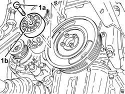
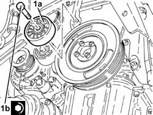

1092G21 ENGINE COMPONENT SINGLE BELT FIXED TENSIONER - R RWITH BELT REMOVED
- Path
- Procedures > 10 ENGINE UNIT > 1092 VARIOUS ENGINE COMPONENT CONTROLS > 1092G SINGLE DRIVE BELT FOR VARIOUS ENGINE COMPONENTS > 1092G21 ENGINE COMPONENT SINGLE BELT FIXED TENSIONER - R RWITH BELT REMOVED
- Kind
- repair procedure (removal / refitting; the operation number is the code)
- Applies to
- engines: 1.9 JTD 16V; all production periods
- Interactive page
- https://sloeber94.github.io/elrnDB-aGt/en/#/125001209
Applies to: engines: 1.9 JTD 16V; all production periods
 Removing
Removing
 Refitting
Refitting1. Undo the bolt (1a) and remove the fixed single drive belt tensioner (1b).

Applies to: engines: 1.9 JTD 16V; all production periods
Refitting
Removing1. Place the engine components single drive belt fixed tensioner (1a) back in its housing and fix it tightening the bolt (1b) to the recommended torque.
 | Fastening | Component | Ø | Value (daNm) |
|---|---|---|---|---|
1b | Bolt | FIXED SINGLE SERVICE BELT TENSIONER | M10 | 4.5 ÷ 5.5 |
